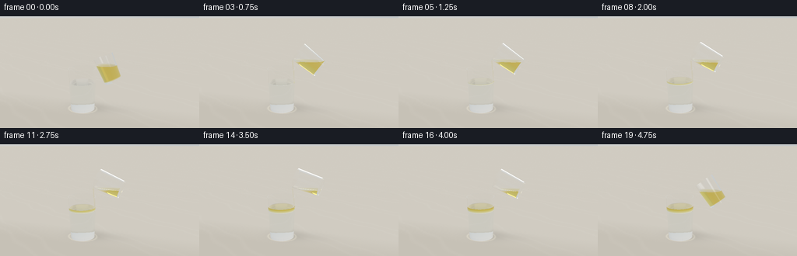
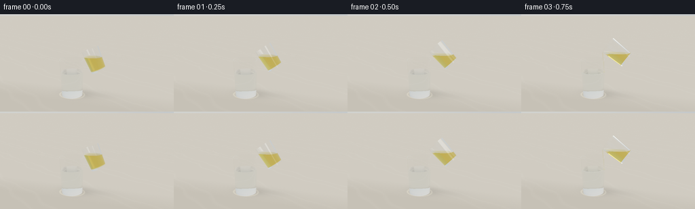
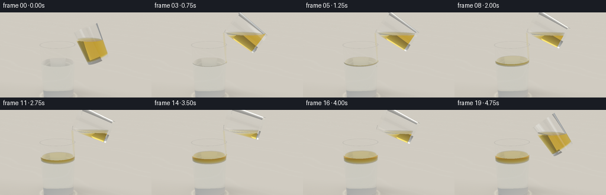
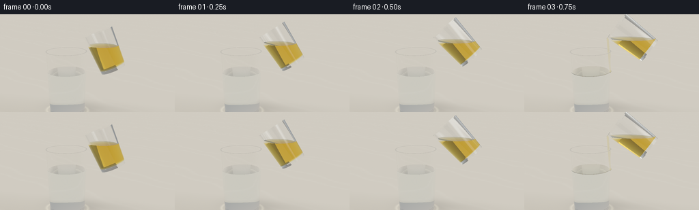
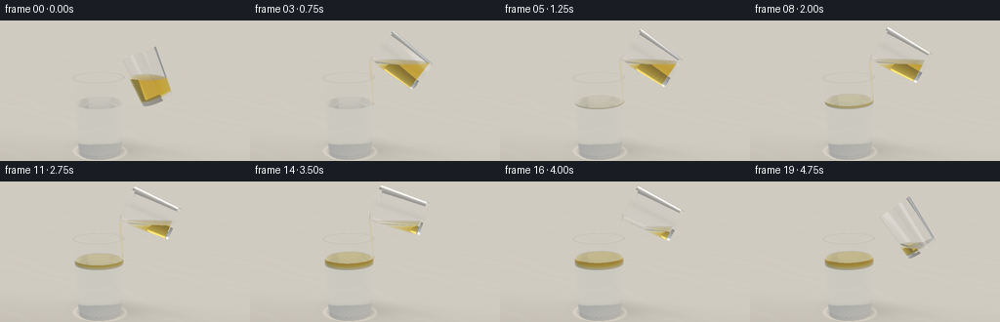
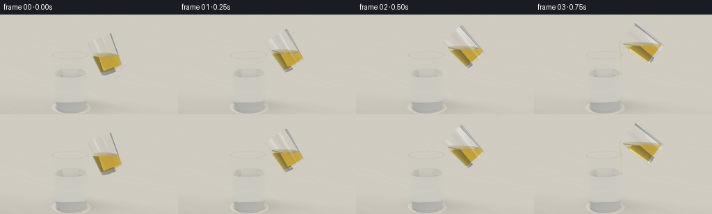
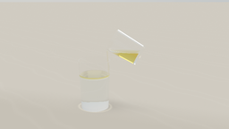

CODING AGENTS AS PIXEL WORLD MODELS
traex/GPT-6.1-Sol · phygen_136
点击播放 · 原生 RGB 像素
逐轮保存的候选
回放视频、检查图与代码变化。
每份候选均可单独播放。实际图片检查记录在下方工具轨迹中。
候选 01播放与检查图
点击播放 · 原生 RGB 像素


展开代码变化
--- 上一保存版本
+++ 本次保存版本
@@ -0,0 +1,238 @@
+import numpy as np
+from PIL import Image
+from pathlib import Path
+import artifact_io
+
+ROOT=Path(__file__).resolve().parent
+W,H=768,432
+DT=np.float32
+EPS=2e-4
+
+def norm(v):
+ return v/(np.linalg.norm(v,axis=-1,keepdims=True)+1e-20)
+
+def env(d):
+ # A softly illuminated warm studio; broad window panels reflect in glass.
+ z=d[:,2]
+ c=np.tile(np.array([.59,.63,.65],DT),(len(d),1))
+ c+=(np.clip(z,0,1)*.17)[:,None]
+ c+=np.exp(-((d[:,0]+.6)/.65)**2-((z-.22)/.6)**2)[:,None]*np.array([.16,.12,.075])
+ a=np.exp(-((d[:,0]+.48)/.16)**8-((d[:,1]+.66)/.27)**8-((z-.42)/.34)**8)
+ c+=a[:,None]*np.array([2.5,2.45,2.3])
+ a=np.exp(-((d[:,0]-.7)/.075)**8-((d[:,1]+.22)/.65)**8-((z-.5)/.35)**8)
+ c+=a[:,None]*np.array([1.8,1.95,2.1])
+ a=np.exp(-((d[:,0]-.06)/.38)**8-((d[:,1]-.65)/.17)**8-((z-.74)/.2)**8)
+ c+=a[:,None]*np.array([1.0,.9,.68])
+ return c
+
+class Shape:
+ # Analytic closed tapered hollow glass, or clipped solid liquid cylinder.
+ def __init__(self,o,axis,r0,r1,h,mat,inner=None,level=None,ripple=0):
+ self.o=np.array(o,DT);self.a=np.array(axis,DT);self.a=norm(self.a)
+ self.u=norm(np.cross(np.array([0,1,0],DT),self.a));self.v=np.cross(self.a,self.u)
+ self.r0=r0;self.k=(r1-r0)/h;self.h=h;self.mat=mat
+ self.inner=inner;self.level=level;self.ripple=ripple
+ def coords(self,p):
+ v=p-self.o
+ return np.stack([v@self.u,v@self.v,v@self.a],axis=1)
+ def intersect(self,O,D):
+ p=self.coords(O);d=np.stack([D@self.u,D@self.v,D@self.a],axis=1)
+ n=len(O); best=np.full(n,np.inf,DT);N=np.zeros((n,3),DT)
+ def accept(t,normal,valid):
+ use=valid&(t>EPS)&(t<best)
+ best[use]=t[use];N[use]=normal[use]
+ def sides(r,k,low,high,inward=False):
+ A=d[:,0]**2+d[:,1]**2-(k*d[:,2])**2
+ B=2*(p[:,0]*d[:,0]+p[:,1]*d[:,1]-(r+k*p[:,2])*k*d[:,2])
+ C=p[:,0]**2+p[:,1]**2-(r+k*p[:,2])**2
+ disc=B*B-4*A*C
+ sq=np.sqrt(np.maximum(disc,0))
+ for sign in [-1,1]:
+ t=(-B+sign*sq)/(2*A+1e-30)
+ hit=p+d*t[:,None];rad=r+k*hit[:,2]
+ valid=(disc>=0)&(hit[:,2]>=low)&(hit[:,2]<=high)
+ world=O+D*t[:,None]
+ if self.level is not None:valid &=world[:,2]<=self.level+1e-5
+ normal=norm(hit[:,0,None]*self.u+hit[:,1,None]*self.v-(k*rad)[:,None]*self.a)
+ if inward:normal=-normal
+ accept(t,normal,valid)
+ sides(self.r0,self.k,0,self.h)
+ if self.inner is not None:
+ r,k,b=self.inner
+ sides(r,k,b,self.h,True)
+ for z,sign in [(0,-1),(self.h,1)]:
+ t=(z-p[:,2])/(d[:,2]+1e-30);q=p+d*t[:,None]
+ rr=q[:,0]**2+q[:,1]**2
+ valid=rr<=(self.r0+self.k*z)**2
+ if self.inner is not None and z==self.h:
+ ir,ik,b=self.inner;valid &=rr>=(ir+ik*z)**2
+ if self.level is not None:valid &=(O[:,2]+D[:,2]*t)<=self.level+1e-5
+ accept(t,np.broadcast_to(sign*self.a,(n,3)),valid)
+ if self.inner is not None:
+ ir,ik,b=self.inner;t=(b-p[:,2])/(d[:,2]+1e-30);q=p+d*t[:,None]
+ valid=q[:,0]**2+q[:,1]**2<=(ir+ik*b)**2
+ accept(t,np.broadcast_to(self.a,(n,3)),valid)
+ if self.level is not None:
+ t=(self.level-O[:,2])/(D[:,2]+1e-30);q=p+d*t[:,None]
+ valid=(q[:,2]>=0)&(q[:,2]<=self.h)&(q[:,0]**2+q[:,1]**2<=(self.r0+self.k*q[:,2])**2)
+ normal=np.tile([0.,0.,1.],(n,1)).astype(DT)
+ if self.ripple:
+ world=O+D*t[:,None];dx=world[:,0]-.03;dy=world[:,1];rad=np.sqrt(dx*dx+dy*dy)+1e-6
+ slope=(.045*np.cos(rad*38-self.ripple)*np.exp(-rad*3)+.010*np.cos(rad*75-self.ripple*1.6)*np.exp(-rad*4))
+ normal[:,0]=-slope*dx/rad;normal[:,1]=-slope*dy/rad;normal=norm(normal)
+ accept(t,normal,valid)
+ return best,N
+ def inside(self,P):
+ p=self.coords(P);rad=p[:,0]**2+p[:,1]**2
+ out=(p[:,2]>0)&(p[:,2]<self.h)&(rad<(self.r0+self.k*p[:,2])**2)
+ if self.inner is not None:
+ r,k,b=self.inner
+ out &=~((p[:,2]>b)&(rad<(r+k*p[:,2])**2))
+ if self.level is not None:out &=P[:,2]<self.level
+ return out
+
+class Sphere:
+ def __init__(self,o,r,mat):self.o=np.array(o,DT);self.r=r;self.mat=mat
+ def intersect(self,O,D):
+ q=O-self.o;b=np.sum(q*D,axis=1);c=np.sum(q*q,axis=1)-self.r**2;delta=b*b-c
+ sq=np.sqrt(np.maximum(delta,0));t=-b-sq;t=np.where(t>EPS,t,-b+sq);t=np.where((delta>=0)&(t>EPS),t,np.inf)
+ N=norm(q+D*np.where(np.isfinite(t),t,0)[:,None]);return t,N
+ def inside(self,P):return np.sum((P-self.o)**2,axis=1)<self.r**2
+
+IOR=np.array([1.,1.5,1.333,1.466],DT)
+ABS=np.array([[0,0,0],[.022,.01,.014],[.045,.015,.009],[.24,.50,2.7]],DT)
+
+def medium(P,shapes):
+ m=np.zeros(len(P),np.int32)
+ for s in shapes:
+ m[s.inside(P)]=s.mat
+ return m
+
+def ground(O,D,frame):
+ # Matte honed limestone with subtle mineral grain and softly blurred shadows.
+ t=-O[:,2]/(D[:,2]+1e-30);p=O+D*t[:,None]
+ x,y=p[:,0],p[:,1]
+ grain=(np.sin(x*86+y*102)*np.sin(x*113-y*79)+np.sin(x*227+y*131))*.004
+ vein=np.sin(x*.9+y*1.7+.23*np.sin(y*2.4)+.14*np.sin(x*3))
+ texture=.015*np.exp(-((vein-.76)/.12)**2)+grain
+ c=np.tile([.68,.64,.56],(len(O),1)).astype(DT)+texture[:,None]
+ c+=np.clip(y/25,-.04,.04)[:,None]
+ shadow=.23*np.exp(-((x+.40)/.85)**2-((y-.22)/.57)**2)
+ shadow+=.06*np.exp(-((x-.9)/.95)**2-((y-.35)/.48)**2)
+ c*=1-shadow[:,None]
+ # Reflected and focused light near the tumbler foot.
+ r=np.sqrt(((x+.65)/.67)**2+((y+.02)/.54)**2)
+ caustic=np.exp(-((r-1.05)/.075)**2)*.14+np.exp(-((r-.84)/.065)**2)*.07
+ c+=caustic[:,None]*np.array([1,.95,.72])
+ return c
+
+def render(shapes,frame):
+ eye=np.array([2.9,-9.,4.35],DT);target=np.array([.22,0,1.92],DT)
+ forward=norm(target-eye);right=norm(np.cross(forward,[0,0,1]));up=np.cross(right,forward)
+ yy,xx=np.mgrid[0:H,0:W]
+ scale=np.tan(np.deg2rad(30)/2)
+ xx=((xx+.5)/W*2-1)*scale*W/H;yy=(1-(yy+.5)/H*2)*scale
+ D=norm(forward+xx.reshape(-1,1)*right+yy.reshape(-1,1)*up).astype(DT)
+ O=np.broadcast_to(eye,D.shape).copy();Npix=len(O)
+ result=np.zeros_like(O);weight=np.ones_like(O);ids=np.arange(Npix)
+ m=np.zeros(Npix,np.int32)
+ for bounce in range(13):
+ if len(O)==0:break
+ best=np.full(len(O),np.inf,DT);normal=np.zeros_like(O);hitmat=np.zeros(len(O),np.int32)
+ for s in shapes:
+ t,n=s.intersect(O,D);mask=t<best
+ best[mask]=t[mask];normal[mask]=n[mask];hitmat[mask]=s.mat
+ floor=-O[:,2]/(D[:,2]+1e-30)
+ fg=(D[:,2]<-1e-5)&(floor>EPS)&(floor<best)
+ escape=~np.isfinite(best)|fg
+ if escape.any():
+ col=env(D[escape]); ef=fg[escape]
+ if ef.any():col[ef]=ground(O[escape][ef],D[escape][ef],frame)
+ result[ids[escape]]+=weight[escape]*col
+ keep=~escape
+ O=O[keep];D=D[keep];ids=ids[keep];weight=weight[keep];m=m[keep]
+ best=best[keep];normal=normal[keep]
+ if not len(O):break
+ weight*=np.exp(-ABS[m]*best[:,None])
+ P=O+D*best[:,None]
+ # Determine actual optical medium on either side of the interface.
+ next_m=medium(P+D*.0012,shapes)
+ ni=IOR[m];nt=IOR[next_m]
+ normal=np.where((np.sum(normal*D,axis=1)>0)[:,None],-normal,normal)
+ cos=-np.sum(normal*D,axis=1);cos=np.clip(cos,0,1);eta=ni/nt
+ k=1-eta*eta*(1-cos*cos);tir=k<0
+ f0=((ni-nt)/(ni+nt))**2
+ F=f0+(1-f0)*(1-cos)**5
+ F=np.where(ni==nt,0,F);F[tir]=1
+ reflect=norm(D+2*cos[:,None]*normal)
+ rc=env(reflect)
+ fref=(reflect[:,2]<-.01)
+ if fref.any():rc[fref]=ground(P[fref],reflect[fref],frame)
+ # Local reflections give the glass its crisp double edges and window glints.
+ result[ids]+=weight*F[:,None]*rc
+ weight*=1-F[:,None]
+ refr=norm(eta[:,None]*D+(eta*cos-np.sqrt(np.maximum(k,0)))[:,None]*normal)
+ D=refr;O=P+D*.0013;m=next_m
+ good=np.max(weight,axis=1)>.002
+ ids=ids[good];O=O[good];D=D[good];weight=weight[good];m=m[good]
+ if len(ids):result[ids]+=weight*env(D)
+ # Gentle camera response, avoiding clipped highlights.
+ result=np.maximum(result,0)
+ result=result/(1+result*.18)
+ result=np.clip(result,0,1)**(1/2.2)
+ image=(result.reshape(H,W,3)*255+.5).astype(np.uint8)
+ return np.array(Image.fromarray(image).resize((256,144),Image.Resampling.LANCZOS))
+
+def scene(i):
+ t=i/4
+ # A graceful single pouring action, with no cuts or camera movements.
+ if i<3:theta=np.deg2rad(24+10*i)
+ elif i<=15:theta=np.deg2rad(54+(i-3)*1.8)
+ else:theta=np.deg2rad(75.6-(i-15)*10)
+ flowing=3<=i<=15
+ amount=np.clip((i-2)/13,0,1)
+ zwater=1.37;zoil=zwater+.205*amount
+ rc=np.array([-.65,0,0],DT)
+ shapes=[]
+ # Slightly tapered hand-blown glass, thick clear foot and thin rounded-looking lip.
+ shapes.append(Shape(rc,[0,0,1],.585,.665,2.04,1,inner=(.545,(.627-.545)/2.04,.095)))
+ shapes.append(Shape([-.65,0,.097],[0,0,1],.549,.604,zwater-.097,2))
+ if amount>0:
+ rbase=.545+(.627-.545)/2.04*zwater
+ shapes.append(Shape([-.65,0,zwater],[0,0,1],rbase,rbase+.008*amount,zoil-zwater,3,level=zoil,ripple=(t*6 if flowing else 0)))
+ # The source glass is guided around its lowest lip; its free surface stays horizontal.
+ a=np.array([-np.sin(theta),0,np.cos(theta)],DT)
+ u=np.array([np.cos(theta),0,np.sin(theta)],DT)
+ h=1.25;r=.47
+ lip=np.array([-.06,.0,2.49],DT)
+ if i>15:lip+=np.array([.045*(i-15),0,.025*(i-15)])
+ origin=lip-a*h+u*r
+ shapes.append(Shape(origin,a,.405,.47,h,1,inner=(.366,(.428-.366)/h,.083)))
+ # Oil volume decreases with the increasing pour angle. At the lip it is unbroken.
+ if i<3:level=lip[2]-.21*(3-i)/3
+ elif flowing:level=lip[2]+.01
+ else:level=lip[2]-.17*(i-15)/4
+ shapes.append(Shape(origin+a*.085,a,.370,.429,h-.087,3,level=level))
+ if flowing:
+ end=np.array([-.027+.011*np.sin(t*2),0,zoil+.008],DT)
+ start=lip+np.array([-.025,0,-.015])
+ ax=norm(start-end);length=np.linalg.norm(start-end)
+ radius=.0285+.003*np.sin(t*3)
+ shapes.append(Shape(end,ax,radius*.83,radius,length,3))
+ shapes.append(Sphere(start,.033,3))
+ shapes.append(Sphere(end+np.array([0,0,.015]),.048,3))
+ # A few entrained oil beads briefly descend, then return buoyantly to the layer.
+ if 4<=i<=9:
+ for j in range(2):
+ z=zwater-.045-.13*abs(np.sin(t*3+j*1.9))
+ shapes.append(Sphere([-.08-.025*j,.012,z],.026-j*.006,3))
+ return shapes
+
+def main():
+ frames=[]
+ for i in range(20):
+ print('Rendering',i,flush=True)
+ frames.append(render(scene(i),i))
+ artifact_io.save(np.stack(frames),ROOT)
+
+if __name__=='__main__':main()
候选 02播放与检查图
点击播放 · 原生 RGB 像素


展开代码变化
--- 上一保存版本
+++ 本次保存版本
@@ -16,6 +16,7 @@
z=d[:,2]
c=np.tile(np.array([.59,.63,.65],DT),(len(d),1))
c+=(np.clip(z,0,1)*.17)[:,None]
+ c*= (.24+.76*np.clip((z+.05)/.8,0,1))[:,None]
c+=np.exp(-((d[:,0]+.6)/.65)**2-((z-.22)/.6)**2)[:,None]*np.array([.16,.12,.075])
a=np.exp(-((d[:,0]+.48)/.16)**8-((d[:,1]+.66)/.27)**8-((z-.42)/.34)**8)
c+=a[:,None]*np.array([2.5,2.45,2.3])
@@ -100,7 +101,7 @@
def inside(self,P):return np.sum((P-self.o)**2,axis=1)<self.r**2
IOR=np.array([1.,1.5,1.333,1.466],DT)
-ABS=np.array([[0,0,0],[.022,.01,.014],[.045,.015,.009],[.24,.50,2.7]],DT)
+ABS=np.array([[0,0,0],[.022,.01,.014],[.045,.015,.009],[.20,.75,4.2]],DT)
def medium(P,shapes):
m=np.zeros(len(P),np.int32)
@@ -127,10 +128,10 @@
return c
def render(shapes,frame):
- eye=np.array([2.9,-9.,4.35],DT);target=np.array([.22,0,1.92],DT)
+ eye=np.array([1.8,-8.,3.8],DT);target=np.array([.04,0,1.68],DT)
forward=norm(target-eye);right=norm(np.cross(forward,[0,0,1]));up=np.cross(right,forward)
yy,xx=np.mgrid[0:H,0:W]
- scale=np.tan(np.deg2rad(30)/2)
+ scale=np.tan(np.deg2rad(21)/2)
xx=((xx+.5)/W*2-1)*scale*W/H;yy=(1-(yy+.5)/H*2)*scale
D=norm(forward+xx.reshape(-1,1)*right+yy.reshape(-1,1)*up).astype(DT)
O=np.broadcast_to(eye,D.shape).copy();Npix=len(O)
@@ -217,7 +218,7 @@
end=np.array([-.027+.011*np.sin(t*2),0,zoil+.008],DT)
start=lip+np.array([-.025,0,-.015])
ax=norm(start-end);length=np.linalg.norm(start-end)
- radius=.0285+.003*np.sin(t*3)
+ radius=.035+.002*np.sin(t*3)
shapes.append(Shape(end,ax,radius*.83,radius,length,3))
shapes.append(Sphere(start,.033,3))
shapes.append(Sphere(end+np.array([0,0,.015]),.048,3))
候选 03播放与检查图
点击播放 · 原生 RGB 像素


展开代码变化
--- 上一保存版本
+++ 本次保存版本
@@ -128,10 +128,10 @@
return c
def render(shapes,frame):
- eye=np.array([1.8,-8.,3.8],DT);target=np.array([.04,0,1.68],DT)
+ eye=np.array([1.8,-8.,3.8],DT);target=np.array([.04,0,1.72],DT)
forward=norm(target-eye);right=norm(np.cross(forward,[0,0,1]));up=np.cross(right,forward)
yy,xx=np.mgrid[0:H,0:W]
- scale=np.tan(np.deg2rad(21)/2)
+ scale=np.tan(np.deg2rad(24)/2)
xx=((xx+.5)/W*2-1)*scale*W/H;yy=(1-(yy+.5)/H*2)*scale
D=norm(forward+xx.reshape(-1,1)*right+yy.reshape(-1,1)*up).astype(DT)
O=np.broadcast_to(eye,D.shape).copy();Npix=len(O)
@@ -191,8 +191,8 @@
elif i<=15:theta=np.deg2rad(54+(i-3)*1.8)
else:theta=np.deg2rad(75.6-(i-15)*10)
flowing=3<=i<=15
- amount=np.clip((i-2)/13,0,1)
- zwater=1.37;zoil=zwater+.205*amount
+ amount=np.clip((i-3)/12,0,1)
+ zwater=1.37;zoil=zwater+.187*amount
rc=np.array([-.65,0,0],DT)
shapes=[]
# Slightly tapered hand-blown glass, thick clear foot and thin rounded-looking lip.
@@ -210,9 +210,20 @@
origin=lip-a*h+u*r
shapes.append(Shape(origin,a,.405,.47,h,1,inner=(.366,(.428-.366)/h,.083)))
# Oil volume decreases with the increasing pour angle. At the lip it is unbroken.
- if i<3:level=lip[2]-.21*(3-i)/3
- elif flowing:level=lip[2]+.01
- else:level=lip[2]-.17*(i-15)/4
+ # Numerically preserve the remaining volume under a horizontal plane.
+ z=np.linspace(0,h-.087,300)
+ rad=.370+(.429-.370)/(h-.087)*z
+ oil_origin=origin+a*.085
+ lo=oil_origin[2]-.5;hi=oil_origin[2]+1.6
+ desired=.248-.213*amount
+ for _ in range(24):
+ level=(lo+hi)/2
+ c=np.clip((level-oil_origin[2]-a[2]*z)/(np.sin(theta)*rad),-1,1)
+ area=rad*rad*(np.pi/2+np.arcsin(c)+c*np.sqrt(1-c*c))
+ volume=np.trapezoid(area,z)
+ if volume>desired:hi=level
+ else:lo=level
+ level=(lo+hi)/2
shapes.append(Shape(origin+a*.085,a,.370,.429,h-.087,3,level=level))
if flowing:
end=np.array([-.027+.011*np.sin(t*2),0,zoil+.008],DT)
可观测工具轨迹
实际执行的命令与返回图片。
命令 1exit 0
/bin/bash -lc 'ls -la && cat prompt.txt && cat GENERATION_RULES.md && cat task_spec.json'
命令 2exit 0
/bin/bash -lc "cat artifact_io.py && python - <<'PY'
import numpy, PIL
print('ok')
PY"命令 3exit 0
/bin/bash -lc "cat > generate.py <<'PY'
import numpy as np
from PIL import Image
from pathlib import Path
import artifact_io
ROOT=Path(__file__).resolve().parent
W,H=768,432
DT=np.float32
EPS=2e-4
def norm(v):
return v/(np.linalg.norm(v,axis=-1,keepdims=True)+1e-20)
def env(d):
# A softly illuminated warm studio; broad window panels reflect in glass.
z=d[:,2]
c=np.tile(np.array([.59,.63,.65],DT),(len(d),1))
c+=(np.clip(z,0,1)*.17)[:,None]
c+=np.exp(-((d[:,0]+.6)/.65)**2-((z-.22)/.6)**2)[:,None]*np.array([.16,.12,.075])
a=np.exp(-((d[:,0]+.48)/.16)**8-((d[:,1]+.66)/.27)**8-((z-.42)/.34)**8)
c+=a[:,None]*np.array([2.5,2.45,2.3])
a=np.exp(-((d[:,0]-.7)/.075)**8-((d[:,1]+.22)/.65)**8-((z-.5)/.35)**8)
c+=a[:,None]*np.array([1.8,1.95,2.1])
a=np.exp(-((d[:,0]-.06)/.38)**8-((d[:,1]-.65)/.17)**8-((z-.74)/.2)**8)
c+=a[:,None]*np.array([1.0,.9,.68])
return c
class Shape:
# Analytic closed tapered hollow glass, or clipped solid liquid cylinder.
def __init__(self,o,axis,r0,r1,h,mat,inner=None,level=None,ripple=0):
self.o=np.array(o,DT);self.a=np.array(axis,DT);self.a=norm(self.a)
self.u=norm(np.cross(np.array([0,1,0],DT),self.a));self.v=np.cross(self.a,self.u)
self.r0=r0;self.k=(r1-r0)/h;self.h=h;self.mat=mat
self.inner=inner;self.level=level;self.ripple=ripple
def coords(self,p):
v=p-self.o
return np.stack([v@self.u,v@self.v,v@self.a],axis=1)
def intersect(self,O,D):
p=self.coords(O);d=np.stack([D@self.u,D@self.v,D@self.a],axis=1)
n=len(O); best=np.full(n,np.inf,DT);N=np.zeros((n,3),DT)
def accept(t,normal,valid):
use=valid&(t>EPS)&(t<best)
best[use]=t[use];N[use]=normal[use]
def sides(r,k,low,high,inward=False):
A=d[:,0]**2+d[:,1]**2-(k*d[:,2])**2
B=2*(p[:,0]*d[:,0]+p[:,1]*d[:,1]-(r+k*p[:,2])*k*d[:,2])
C=p[:,0]**2+p[:,1]**2-(r+k*p[:,2])**2
disc=B*B-4*A*C
sq=np.sqrt(np.maximum(disc,0))
for sign in [-1,1]:
t=(-B+sign*sq)/(2*A+1e-30)
hit=p+d*t[:,None];rad=r+k*hit[:,2]
valid=(disc>=0)&(hit[:,2]>=low)&(hit[:,2]<=high)
world=O+D*t[:,None]
if self.level is not None:valid &=world[:,2]<=self.level+1e-5
normal=norm(hit[:,0,None]*self.u+hit[:,1,None]*self.v-(k*rad)[:,None]*self.a)
if inward:normal=-normal
accept(t,normal,valid)
sides(self.r0,self.k,0,self.h)
if self.inner is not None:
r,k,b=self.inner
sides(r,k,b,self.h,True)
for z,sign in [(0,-1),(self.h,1)]:
t=(z-p[:,2])/(d[:,2]+1e-30);q=p+d*t[:,None]
rr=q[:,0]**2+q[:,1]**2
valid=rr<=(self.r0+self.k*z)**2
if self.inner is not None and z==self.h:
ir,ik,b=self.inner;valid &=rr>=(ir+ik*z)**2
if self.level is not None:valid &=(O[:,2]+D[:,2]*t)<=self.level+1e-5
accept(t,np.broadcast_to(sign*self.a,(n,3)),valid)
if self.inner is not None:
ir,ik,b=self.inner;t=(b-p[:,2])/(d[:,2]+1e-30);q=p+d*t[:,None]
valid=q[:,0]**2+q[:,1]**2<=(ir+ik*b)**2
accept(t,np.broadcast_to(self.a,(n,3)),valid)
if self.level is not None:
t=(self.level-O[:,2])/(D[:,2]+1e-30);q=p+d*t[:,None]
valid=(q[:,2]>=0)&(q[:,2]<=self.h)&(q[:,0]**2+q[:,1]**2<=(self.r0+self.k*q[:,2])**2)
normal=np.tile([0.,0.,1.],(n,1)).astype(DT)
if self.ripple:
world=O+D*t[:,None];dx=world[:,0]-.03;dy=world[:,1];rad=np.sqrt(dx*dx+dy*dy)+1e-6
slope=(.045*np.cos(rad*38-self.ripple)*np.exp(-rad*3)+.010*np.cos(rad*75-self.ripple*1.6)*np.exp(-rad*4))
normal[:,0]=-slope*dx/rad;normal[:,1]=-slope*dy/rad;normal=norm(normal)
accept(t,normal,valid)
return best,N
def inside(self,P):
p=self.coords(P);rad=p[:,0]**2+p[:,1]**2
out=(p[:,2]>0)&(p[:,2]<self.h)&(rad<(self.r0+self.k*p[:,2])**2)
if self.inner is not None:
r,k,b=self.inner
out &=~((p[:,2]>b)&(rad<(r+k*p[:,2])**2))
if self.level is not None:out &=P[:,2]<self.level
return out
class Sphere:
def __init__(self,o,r,mat):self.o=np.array(o,DT);self.r=r;self.mat=mat
def intersect(self,O,D):
q=O-self.o;b=np.sum(q*D,axis=1);c=np.sum(q*q,axis=1)-self.r**2;delta=b*b-c
sq=np.sqrt(np.maximum(delta,0));t=-b-sq;t=np.where(t>EPS,t,-b+sq);t=np.where((delta>=0)&(t>EPS),t,np.inf)
N=norm(q+D*np.where(np.isfinite(t),t,0)[:,None]);return t,N
def inside(self,P):return np.sum((P-self.o)**2,axis=1)<self.r**2
IOR=np.array([1.,1.5,1.333,1.466],DT)
ABS=np.array([[0,0,0],[.022,.01,.014],[.045,.015,.009],[.24,.50,2.7]],DT)
def medium(P,shapes):
m=np.zeros(len(P),np.int32)
for s in shapes:
m[s.inside(P)]=s.mat
return m
def ground(O,D,frame):
# Matte honed limestone with subtle mineral grain and softly blurred shadows.
t=-O[:,2]/(D[:,2]+1e-30);p=O+D*t[:,None]
x,y=p[:,0],p[:,1]
grain=(np.sin(x*86+y*102)*np.sin(x*113-y*79)+np.sin(x*227+y*131))*.004
vein=np.sin(x*.9+y*1.7+.23*np.sin(y*2.4)+.14*np.sin(x*3))
texture=.015*np.exp(-((vein-.76)/.12)**2)+grain
c=np.tile([.68,.64,.56],(len(O),1)).astype(DT)+texture[:,None]
c+=np.clip(y/25,-.04,.04)[:,None]
shadow=.23*np.exp(-((x+.40)/.85)**2-((y-.22)/.57)**2)
shadow+=.06*np.exp(-((x-.9)/.95)**2-((y-.35)/.48)**2)
c*=1-shadow[:,None]
# Reflected and focused light near the tumbler foot.
r=np.sqrt(((x+.65)/.67)**2+((y+.02)/.54)**2)
caustic=np.exp(-((r-1.05)/.075)**2)*.14+np.exp(-((r-.84)/.065)**2)*.07
c+=caustic[:,None]*np.array([1,.95,.72])
return c
def render(shapes,frame):
eye=np.array([2.9,-9.,4.35],DT);target=np.array([.22,0,1.92],DT)
forward=norm(target-eye);right=norm(np.cross(forward,[0,0,1]));up=np.cross(right,forward)
yy,xx=np.mgrid[0:H,0:W]
scale=np.tan(np.deg2rad(30)/2)
xx=((xx+.5)/W*2-1)*scale*W/H;yy=(1-(yy+.5)/H*2)*scale
D=norm(forward+xx.reshape(-1,1)*right+yy.reshape(-1,1)*up).astype(DT)
O=np.broadcast_to(eye,D.shape).copy();Npix=len(O)
result=np.zeros_like(O);weight=np.ones_like(O);ids=np.arange(Npix)
m=np.zeros(Npix,np.int32)
for bounce in range(13):
if len(O)==0:break
best=np.full(len(O),np.inf,DT);normal=np.zeros_like(O);hitmat=np.zeros(len(O),np.int32)
for s in shapes:
t,n=s.intersect(O,D);mask=t<best
best[mask]=t[mask];normal[mask]=n[mask];hitmat[mask]=s.mat
floor=-O[:,2]/(D[:,2]+1e-30)
fg=(D[:,2]<-1e-5)&(floor>EPS)&(floor<best)
escape=~np.isfinite(best)|fg
if escape.any():
col=env(D[escape]); ef=fg[escape]
if ef.any():col[ef]=ground(O[escape][ef],D[escape][ef],frame)
result[ids[escape]]+=weight[escape]*col
keep=~escape
O=O[keep];D=D[keep];ids=ids[keep];weight=weight[keep];m=m[keep]
best=best[keep];normal=normal[keep]
if not len(O):break
weight*=np.exp(-ABS[m]*best[:,None])
P=O+D*best[:,None]
# Determine actual optical medium on either side of the interface.
next_m=medium(P+D*.0012,shapes)
ni=IOR[m];nt=IOR[next_m]
normal=np.where((np.sum(normal*D,axis=1)>0)[:,None],-normal,normal)
cos=-np.sum(normal*D,axis=1);cos=np.clip(cos,0,1);eta=ni/nt
k=1-eta*eta*(1-cos*cos);tir=k<0
f0=((ni-nt)/(ni+nt))**2
F=f0+(1-f0)*(1-cos)**5
F=np.where(ni==nt,0,F);F[tir]=1
reflect=norm(D+2*cos[:,None]*normal)
rc=env(reflect)
fref=(reflect[:,2]<-.01)
if fref.any():rc[fref]=ground(P[fref],reflect[fref],frame)
# Local reflections give the glass its crisp double edges and window glints.
result[ids]+=weight*F[:,None]*rc
weight*=1-F[:,None]
refr=norm(eta[:,None]*D+(eta*cos-np.sqrt(np.maximum(k,0)))[:,None]*normal)
D=refr;O=P+D*.0013;m=next_m
good=np.max(weight,axis=1)>.002
ids=ids[good];O=O[good];D=D[good];weight=weight[good];m=m[good]
if len(ids):result[ids]+=weight*env(D)
# Gentle camera response, avoiding clipped highlights.
result=np.maximum(result,0)
result=result/(1+result*.18)
result=np.clip(result,0,1)**(1/2.2)
image=(result.reshape(H,W,3)*255+.5).astype(np.uint8)
return np.array(Image.fromarray(image).resize((256,144),Image.Resampling.LANCZOS))
def scene(i):
t=i/4
# A graceful single pouring action, with no cuts or camera movements.
if i<3:theta=np.deg2rad(24+10*i)
elif i<=15:theta=np.deg2rad(54+(i-3)*1.8)
else:theta=np.deg2rad(75.6-(i-15)*10)
flowing=3<=i<=15
amount=np.clip((i-2)/13,0,1)
zwater=1.37;zoil=zwater+.205*amount
rc=np.array([-.65,0,0],DT)
shapes=[]
# Slightly tapered hand-blown glass, thick clear foot and thin rounded-looking lip.
shapes.append(Shape(rc,[0,0,1],.585,.665,2.04,1,inner=(.545,(.627-.545)/2.04,.095)))
shapes.append(Shape([-.65,0,.097],[0,0,1],.549,.604,zwater-.097,2))
if amount>0:
rbase=.545+(.627-.545)/2.04*zwater
shapes.append(Shape([-.65,0,zwater],[0,0,1],rbase,rbase+.008*amount,zoil-zwater,3,level=zoil,ripple=(t*6 if flowing else 0)))
# The source glass is guided around its lowest lip; its free surface stays horizontal.
a=np.array([-np.sin(theta),0,np.cos(theta)],DT)
u=np.array([np.cos(theta),0,np.sin(theta)],DT)
h=1.25;r=.47
lip=np.array([-.06,.0,2.49],DT)
if i>15:lip+=np.array([.045*(i-15),0,.025*(i-15)])
origin=lip-a*h+u*r
shapes.append(Shape(origin,a,.405,.47,h,1,inner=(.366,(.428-.366)/h,.083)))
# Oil volume decreases with the increasing pour angle. At the lip it is unbroken.
if i<3:level=lip[2]-.21*(3-i)/3
elif flowing:level=lip[2]+.01
else:level=lip[2]-.17*(i-15)/4
shapes.append(Shape(origin+a*.085,a,.370,.429,h-.087,3,level=level))
if flowing:
end=np.array([-.027+.011*np.sin(t*2),0,zoil+.008],DT)
start=lip+np.array([-.025,0,-.015])
ax=norm(start-end);length=np.linalg.norm(start-end)
radius=.0285+.003*np.sin(t*3)
shapes.append(Shape(end,ax,radius*.83,radius,length,3))
shapes.append(Sphere(start,.033,3))
shapes.append(Sphere(end+np.array([0,0,.015]),.048,3))
# A few entrained oil beads briefly descend, then return buoyantly to the layer.
if 4<=i<=9:
for j in range(2):
z=zwater-.045-.13*abs(np.sin(t*3+j*1.9))
shapes.append(Sphere([-.08-.025*j,.012,z],.026-j*.006,3))
return shapes
def main():
frames=[]
for i in range(20):
print('Rendering',i,flush=True)
frames.append(render(scene(i),i))
artifact_io.save(np.stack(frames),ROOT)
if __name__=='__main__':main()
PY
OPENBLAS_NUM_THREADS=1 python generate.py"命令 4exit 1
/bin/bash -lc "python - <<'PY' import numpy as np for deg in [24,34,44,54,66,76]: th=np.deg2rad(deg);h=1.25;r=.47;a=np.cos(th);u=np.sin(th) # local height measured from source base .085, limit lip at a*h-r*u z=np.linspace(.085,1.247,2000);R=.366+(.428-.366)/1.25*z;cut=(a*h-r*u-a*z)/u c=np.clip(cut/R,-1,1) area=R*R*(np.pi/2+np.arcsin(c)+c*np.sqrt(1-c*c)) print(deg,np.trapz(area,z)) PY"
命令 5exit 0
/bin/bash -lc "python - <<'PY' import numpy as np for deg in [24,34,44,54,66,76]: th=np.deg2rad(deg);h=1.25;r=.47;a=np.cos(th);u=np.sin(th) z=np.linspace(.085,1.247,2000);R=.366+(.428-.366)/1.25*z;cut=(a*h-r*u-a*z)/u c=np.clip(cut/R,-1,1);area=R*R*(np.pi/2+np.arcsin(c)+c*np.sqrt(1-c*c)) print(deg,np.trapezoid(area,z)) PY"
命令 6exit 0
/bin/bash -lc "python - <<'PY'
p='generate.py'
s=open(p).read()
s=s.replace('c+=(np.clip(z,0,1)*.17)[:,None]','c+=(np.clip(z,0,1)*.17)[:,None]\\n c*= (.24+.76*np.clip((z+.05)/.8,0,1))[:,None]')
s=s.replace('[.24,.50,2.7]', '[.20,.75,4.2]')
s=s.replace('eye=np.array([2.9,-9.,4.35],DT);target=np.array([.22,0,1.92],DT)','eye=np.array([1.8,-8.,3.8],DT);target=np.array([.04,0,1.68],DT)')
s=s.replace('np.deg2rad(30)/2','np.deg2rad(21)/2')
s=s.replace('radius=.0285+.003*np.sin(t*3)','radius=.035+.002*np.sin(t*3)')
open(p,'w').write(s)
PY
OPENBLAS_NUM_THREADS=1 python generate.py"命令 7exit 0
/bin/bash -lc 'command -v ffmpeg || true'
命令 8exit 0
/bin/bash -lc "python - <<'PY'
p='generate.py';s=open(p).read().replace('np.deg2rad(21)/2','np.deg2rad(24)/2').replace('target=np.array([.04,0,1.68],DT)','target=np.array([.04,0,1.72],DT)').replace('amount=np.clip((i-2)/13,0,1)','amount=np.clip((i-3)/12,0,1)').replace('zoil=zwater+.205*amount','zoil=zwater+.187*amount')
s=s.replace(' if i<3:level=lip[2]-.21*(3-i)/3\\n elif flowing:level=lip[2]+.01\\n else:level=lip[2]-.17*(i-15)/4', ''' # Numerically preserve the remaining volume under a horizontal plane.
z=np.linspace(0,h-.087,300)
rad=.370+(.429-.370)/(h-.087)*z
oil_origin=origin+a*.085
lo=oil_origin[2]-.5;hi=oil_origin[2]+1.6
desired=.248-.213*amount
for _ in range(24):
level=(lo+hi)/2
c=np.clip((level-oil_origin[2]-a[2]*z)/(np.sin(theta)*rad),-1,1)
area=rad*rad*(np.pi/2+np.arcsin(c)+c*np.sqrt(1-c*c))
volume=np.trapezoid(area,z)
if volume>desired:hi=level
else:lo=level
level=(lo+hi)/2''')
open(p,'w').write(s)
PY
OPENBLAS_NUM_THREADS=1 python generate.py"命令 9exit 0
/bin/bash -lc "python - <<'PY'
from pathlib import Path
import numpy as np
from PIL import Image
p=np.load('pixels.npz')['pixels']
assert p.shape==(144,256,20)
f=list(Path('frames').glob('*.png'))
assert len(f)==20
assert all(Image.open(x).size==(256,144) and Image.open(x).mode=='RGB' for x in f)
assert Path('index.html').exists() and Path('generate.py').exists()
print('Validated: 20 RGB frames, 256x144, 4 fps; all required artifacts exist.')
PY"视觉工具实际返回图片 1

视觉工具实际返回图片 2

视觉工具实际返回图片 3

视觉工具实际返回图片 4

保存候选 3 份；完成命令 9 次；可验证图片返回 4 张。原始 API 响应与完整日志保留在本地。